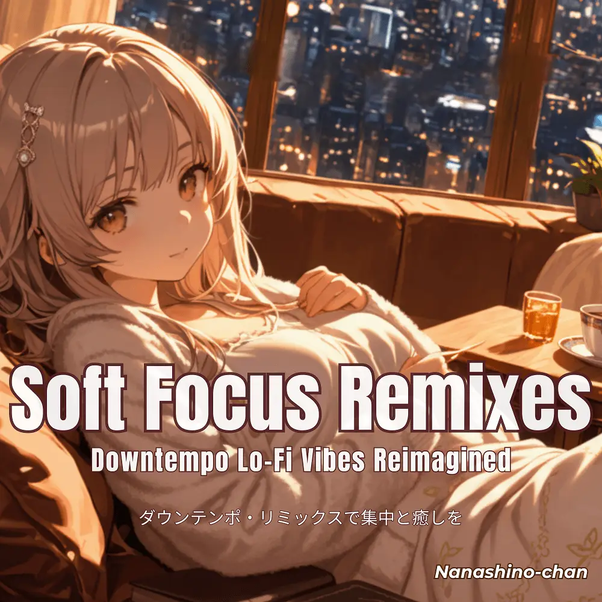

Downtempo · Lo-Fi
Soft Focus Remixes: Downtempo Lo-Fi Vibes Reimagined
Nanashino-chan
Explore Soft Focus Remixes: Downtempo Lo-Fi Vibes Reimagined by Nanashino-chan: 20 instrumental tracks spanning Downtempo / Lo-Fi. Start with Gentle Dawn / Morning Breeze, preview the collection and find your favorites on streaming services.
2025-04-28 · Released · 20 tracks · Instrumental
Preview the album
The jacket stays here until you choose a track. Playback uses YouTube.
YOUTUBE PREVIEW
Choose a track to listen
The jacket stays here until you choose a track. Playback uses YouTube.
If playback is unavailable, open the album or track on the streaming service.
Find this album on streaming services
Links marked “search” open search results. Select the album or track on the service.
Track list 20
- 01Gentle Dawn
- 02Morning Breeze
- 03Whispers of Calm
- 04Serenity Stream
- 05Echoes of Tranquility
- 06Ambient Rhythm
- 07Mellow Moments
- 08Hushed Waves
- 09Dreamy Drift
- 10Soft Reflections
- 11Quiet Contemplation
- 12Lullaby of Light
- 13Peaceful Pathways
- 14Ethereal Essence
- 15Restful Rhythm
- 16Ambient Flow
- 17Subtle Silhouettes
- 18Calm Currents
- 19Evening Glow
- 20Midnight Reverie
Find a sound for your next post
Copy “Nanashino-chan + track title” and paste it into your social app’s music search. Availability depends on your region and account. Copying the name does not grant usage rights.